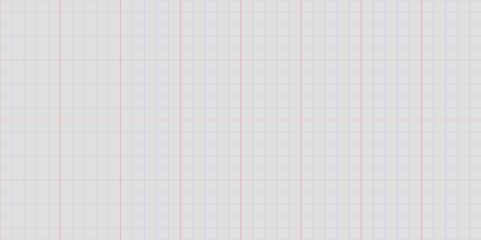
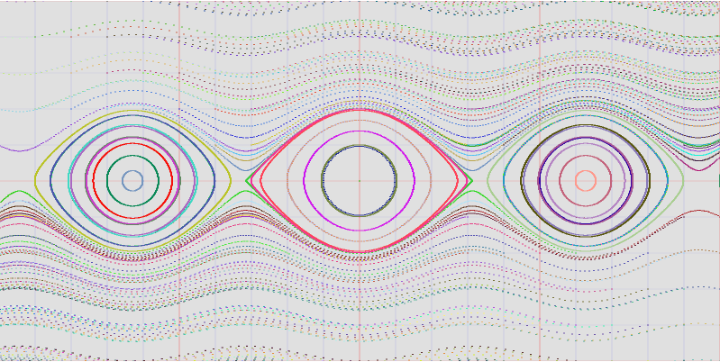
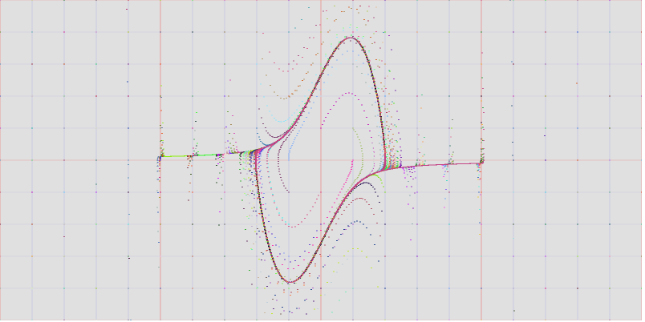

A Simple example using Scala.js
After the Scaladays 2015 in SF, a lot of echo has involved the Scala.js framework. Scala.js compiles Scala code into Javascript code, which can be run in a browser but also on Javascript powered server environments e.g. Node.js.
Scala.js is not something like GWT, which provided a whole toolkit for Javascript code generation from Java. Scala.js is simply a compiler that translates Scala code into Javascript code. This allows to use all the great features that make Scala such a successful language, like strong typing, functional code, higher order functions, case classes, pattern matching, and even Future and Promises (when dealing e.g. with events on the client or with Ajax calls). For some parts it is possible to develop code that is fully agnostic of the target platform, i.e. you can write some Scala code that can be executed equivalently on a JVM or on a browser when compiled with Scala.js. For the parts that deal with HTML elements or with Ajax, the target platform must be taken into consideration. The advantage that Scala.js offers is, on top of the pleasure of using a concise and expressive language like Scala, that due to the strong typing it allows to discover errors already in the compilation phase, while as we know when we develop logic in Javascript, most of the times we discover errors only at runtime.
To show all the goodness of Scala.js I could have written a simple game, but there are already plenty of these examples around. Being this the blog of a real nerd, in this post we will use Scala.js to build a simulator of dynamic systems running on a browser, with the aim to draw a phase portrait of a system described by a 2-dimensional ODE. The source code used in along this post can be found here.
SBT project setup
For a full introduction to Scala.js please refer to the great guide http://lihaoyi.github.io/hands-on-scala-js/. The layout of my project follows exactly the structure outlined in that guide.
To setup an SBT project to use Scala.js you simply must add the corresponding plugin in the plugins.sbt file. I added also the Workbench plugin which proved to be very useful to test your code on the browser:
addSbtPlugin("org.scala-js" % "sbt-scalajs" % "0.6.1")
addSbtPlugin("com.lihaoyi" % "workbench" % "0.2.3")
In the build.sbt file we must enable the ScalaJSPlugin and add the dependency from the scalajs-dom library that allows us to access the DOM elements (and events) from Scala, in a typesafe fashion.
enablePlugins(ScalaJSPlugin)
libraryDependencies ++= Seq(
"org.scala-js" %%% "scalajs-dom" % "0.8.0"
)
bootSnippet := "drawing.ScalaJSPhasePortrait().main(document.getElementById('canvas'));"
updateBrowsers <<= updateBrowsers.triggeredBy(fastOptJS in Compile)
The bootSnippet line is used just to configure Workbench to execute that Javascript to start the application on the browser, and the updateBrowsers line is used to trigger the boot at the end of each compilation phase.
Coding
In the project folder /src/main/scala we put our Scala code that will be then compiled into equivalent Javascript. We need to define one or more exposed points, i.e. a Scala Object that we want to be translated in Javascript, on which we can invoke one or more methods. Both the Object and the methods must be marked properly for export, by means of the @JSExport annotation:
package drawing
// ...
@JSExport
object ScalaJSPhasePortrait {
@JSExport
def realPendulumPhasePortrait(canvas: Canvas): Unit = // ...
@JSExport
def simplePendulumPhasePortrait(canvas: Canvas): Unit = // ...
@JSExport
def lotkaVolterraPhasePortrait(canvas: Canvas): Unit = // ...
Here we are exposing the drawing.ScalaJSPhasePortrait object and 3 methods realPendulumPhasePortrait, simplePendulumPhasePortrait and lotkaVolterraPhasePortrait, each of them expecting a Canvas object as input. The compiler will start from these exposed entities and transitively include everything is strictly required by the code in order to function. This means that if a method uses some features provided by another class, possibly provided by a separate library, only the required features are included in the translation package and not the whole library. There is no limit to the number of objects or functions you might want to expose in your application.
When we run
sbt ~fastOptJS
we trigger the code generation (the ~ is a standard SBT feature that allows code to be regenerated whenever something changes in the source files). If we inspect the /target folder in the project we can see that a file target/scala-2.11/phaseportraitjs-fastopt.js has been created. This is the output of the Scala.js compiler. The name of this file is determined by the SBT project name, and this is the file that must be included in our HTML page in order to have our example working. We can then invoke the drawing.ScalaJSPhasePortrait object methods from any point in our browser.
<script type="text/javascript" src="../phaseportraitjs-fastopt.js"></script>
<script type="text/javascript" src="/workbench.js"></script>
<script>
drawing.ScalaJSPhasePortrait().simplePendulumPhasePortrait(document.getElementById('simplePendulum'));
drawing.ScalaJSPhasePortrait().realPendulumPhasePortrait(document.getElementById('realPendulum'));
drawing.ScalaJSPhasePortrait().lotkaVolterraPhasePortrait(document.getElementById('lotkaVolterra'));
</script>
The problem
An autonomous dynamical system in \(\mathbb{R}^n\) is described by a system of differential equations that can be represented as:
$$\dot x = f(x),\ x \in \mathbb{R}^n$$
Being the system autonomous means that the field described by the function \(f\) does not depend from time, and this means that the evolution of the movement \(x(t)\) given some initial condition \(x_0\) depends only from \(x_0\) and not from the particular initial time (there is an invariance on time shift).
This allows us to provide a good description of the evolution of the system by describing the orbits of the sytem, i.e. the values that \(x(t)\) assumes regardless of the time. This type of qualitative analysis is important when describing systems for which we don’t know an exact solution.
In our Scala.js application we want to provide a general solution for this problem, for systems of dimension 2, so that their evolution can be easily represented on a 2-dimensional space, in our case an HTML Canvas.
We need to separate the concerns of drawing something on a given rectangle from those of calculating the evolution of a dynamic system.
Drawing points on a rectangular area
The starting point is the HTML Canvas that has a given size, and the window of \(\mathbb{R}^2\) we want to represent on it. For convenience we allow the window center and sizes to assume only integer values. The window is a simple case class:
case class DrawingWindow(canvas: Canvas, centerX: Int, centerY: Int, halfWidth: Int, halfHeight: Int) {
val deltaX = halfWidth * 2.0 / canvas.width
val deltaY = halfHeight * 2.0 / canvas.height
}
The deltaX and deltaY values represent the resolution of our window on the given canvas.
The Plot class provides all the methods we need to deal with the window on the canvas and to plot dots and curves on it.
The mathematical points are represented by the case class Point, on which we defined the standard operation on the vector space \(\mathbb{R}^2\):
case class Point (x: Double, y: Double) {
def +(other: Point) = Point(this.x + other.x, this.y + other.y)
def -(other: Point) = Point(this.x - other.x, this.y - other.y)
def *(factor: Double) = Point(this.x * factor, this.y * factor)
def abs = Math.sqrt(x * x + y * y)
}
We can appreciate how easily Scala case classes and operators allow us to represent algebraic entities and operators like we are used to do in Algebra. Doing the same thing in Java would have taken many more lines of code and would have lacked expressiveness.
The transformation from a Point to a CanvasPoint is performed by the point2CanvasPoint(p: Point): CanvasPoint function in the Plot class.
A drawGrid() function uses for comprehensions to draw the grid on the window:

To draw points on the canvas we simply draw little circles around each point, you can check the source code for the details.
Calculating the evolution of the system from initial conditions
In order to plot the phase portrait we begin defining a set of initial points to start the evolution from. In our case we pick the points on the grid with integer coordinates. Once we have this initial condition \(x_0\) we must simulate the evolution \(x(t)\) that solves our differential equation starting from \(x_0\): \(x(0) = x_0\). If we do this repeatedly for each initial condition in our grid, we end up with a phase portrait.
To calculate the evolution we use the 4th order Runge-Kutta algorithm (see here for the details).
We sample the solution in regular time intervals \(0,\ \Delta t,\ 2\Delta t,\ \) etc. The sequence of values of \(x(t)\) is represented by a Stream that we build through the iterate function needs the head of the Stream and the function to produce the next sample given the current one, on demand, so it fits perfectly with our needs.
If we represent our function \(f\) as f: Point => Point, the whole evolution machinery is represented by this function (we translated almost verbatim the mathematical formula of the Runge-Kutta method):
//evolution of a dynamic system in R2 (RK 4th order)
def evolution(f: Point => Point, x0: Point, deltaT: Double = 0.05): Stream[(Double, Point)] = Stream.iterate((0.0, x0)) {
case (tn: Double, xn: Point) => {
val an = f(xn)
val bn = f(xn + (an * (deltaT / 2)))
val cn = f(xn + (bn * (deltaT / 2)))
val dn = f(xn + (cn * (deltaT)))
(tn + deltaT, xn + (an + bn * 2 + cn * 2 + dn) * (deltaT / 6))
}
}
Given the function f, the initial point x0 and the sampling interval deltaT the evolution function provides us with a stream of pairs (tn, xn) that represent the evolution of the system.
If we take a given number of samples and we plot them, we have one orbit for a given initial condition. If we do that for all the points with integer coordinates in our grid, we have a complete phase portrait for the system described by the function f.
def phasePortrait(f: Point => Point) = {
val verticalLines = (drawingWindow.centerX - drawingWindow.halfWidth) to (drawingWindow.centerX + drawingWindow.halfWidth)
val horizontalLines = (drawingWindow.centerY - drawingWindow.halfHeight) to (drawingWindow.centerY + drawingWindow.halfHeight)
for {
x <- verticalLines
y <- horizontalLines
} {
println(s"x0 = ${Point(x, y)}")
//rgb to plot the orbit with 1 color
val rgb = s"rgb(${Random.nextInt(256)},${Random.nextInt(256)},${Random.nextInt(256)})"
evolution(f, Point(x, y)).map {
case (t, p) => {
plotter.draw(p, rgb)
p
}
} take(3000) toList
}
}
You can see that we used here the Scala println function. The code generated in ScalaJS has the very convenient feature that all these instructions are translated into browser console logs.
Now we can define the system we want to simulate simply by defining the corresponding function \(f\):
val omega = 1.0
def simplePendulum = (x: Point) => Point(x.y, - omega * omega * x.x)
def realPendulum = (x: Point) => Point(x.y, - omega * omega * Math.sin(x.x))
def lotkaVolterra = (x: Point) => Point(x.x - x.x * x.y, x.x * x.y - x.y)
def vanDerPol = (x: Point) => Point(x.y, 2 * (1 - x.x * x.x) * x.y - x.x)
and pass this function to our phasePortrait that takes care of plotting the corresponding phase portrait in the given Canvas. Here are a couple of examples:
Pendulum 
We can clearly identify the single orbits (from the given color). The further we move from the horizontal axis, the higher is the speed and therefore our samples are getting more sparse. An adaptive sampling algorithm would have helped us having a better drawing, but the essence of the implementation does not change.
Van der Pol 
We can see that in this system all the orbits end up overlapping with a given, globally attracting, orbit. This is a clear phenomenom of limit cycle, examples of which we have also in the discrete world, e.g. in digital signal processing.
Conclusion
We have seen how Scala.js is a convenient way to build code running on any Javascript powered platform, using the great features of the Scala language.
It is also a nice way to translate Scala code, which tends to be very generic and applicable to different types, into visual components easily accessible to anyone and not only to people with technical skills.
The evolution function provided above can be used to simulate any system of dimension 2, and easily adapted to simulate any dynamic system described by a differential equation, even in the time-dependent case (it is sufficient to increase the dimension of one and obtain an equivalent autonomous system).
The Plot class can be reused to plot any kind of curve on a given window on the Cartesian plane.